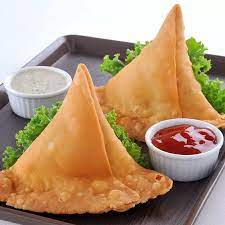

Samosa
A samosa is a fried South Asian pastry with a savoury filling

Contents
- Potatoes
- Flour
- Oil
- Masalas
- Lots of Love
Recipe
- The first step is to cook the potatoes and peas for the savory and spiced filling.
- For the stovetop pressure cooker, remove the lid after all the pressure falls in the cooker.
- Next, roast or toast the spices. This will help to release their flavors and should not be skipped!
For more snacks recipe click on the link below
Suji Halwa